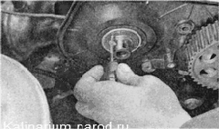

Сальники распределительных валов - замена
Для выполнения работы потребуется специальный инструмент для удержания шкивов распределительных валов.
Работу можно выполнить без этого устройства, если удастся отвернуть болты крепления шкивов распределительных валов.
Последовательность выполнения
1. Снимаем верхнюю переднюю крышку ремня привода ГРМ.
2. Торцовым ключом на 17 мм поворачиваем коленчатый вал до совпадения меток на шкивах распределительных валов с метками на задней крышке ремня привода ГРМ.
3. Поочередно удерживая шкивы распределительных валов специальный инструментом, ключом на 17 мм ослабляем болты крепления шкивов.
Совет
Если нет инструмента для удержания шкивов распределительных валов, включаем пятую передачу, фиксируем автомобиль стояночным тормозом и торцовым ключом на 17 мм ослабляем затяжку болтов крепления шкивов.

4. Ослабляем натяжение ремня привода ГРМ.
5. Снимаем ремень со шкива вала выпускных клапанов и, вывернув болт, снимаем шкив.

6. Извлекаем шпонку из паза распределительного вала.
При выполнении следующей операции не поцарапайте рабочую поверхность распределительного вала и не повредите посадочное место сальника.
7. Сверлом диаметром 2,5 мм аккуратно высверливаем отверстие в сальнике и заворачиваем в сальник саморез.
8. Пассатижами, потянув за саморез, извлекаем сальник распределительного вала из посадочного отверстия.
9. Наносим чистое моторное масло на рабочую кромку нового сальника и запрессовываем его молотком через глубокую головку на 32 мм (или через отрезок трубы диаметром 40 мм) так, чтобы наружная кромка сальника была заподлицо с кромкой его посадочного отверстия.
10. Устанавливаем шпонку в паз распределительного вала.
11. Надеваем шкив на распределительный вал и заворачиваем болт крепления шкива.
12. Аналогично заменяем сальник второго распределительного вала.
13. Убеждаемся что взаимное расположение меток на шкивах и задней крышке ремня привода ГРМ не нарушено. Надеваем ремень привода ГРМ на шкивы и натягиваем его.
14. Устанавливаем верхнюю крышку ремня привода ГРМ и другие детали в последовательности, обратной снятию.